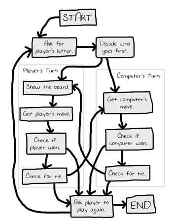
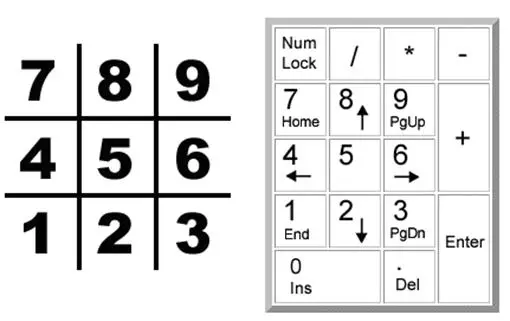
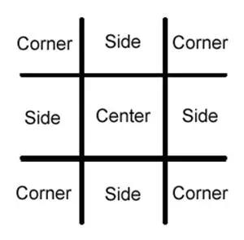
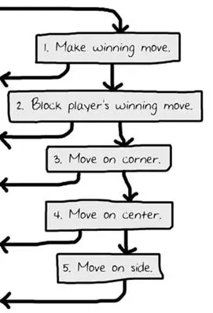
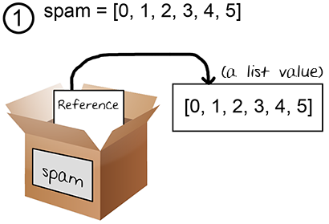
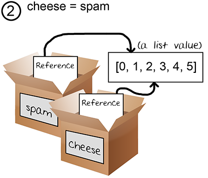
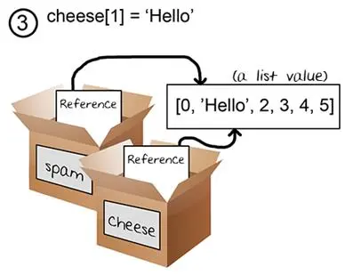
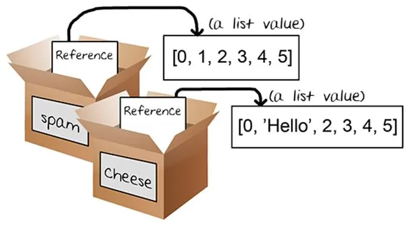

|
Chapter 10 |
|
Tic Tac Toe |
Topics Covered In This Chapter:
· Artificial Intelligence
· List References
· Short-Circuit Evaluation
· The None Value
This chapter features a Tic Tac Toe game against a simple artificial intelligence. An artificial intelligence (or AI) is a computer program that can intelligently respond to the player’s moves. This game doesn’t introduce any complicated new concepts. The artificial intelligence that plays Tic Tac Toe is really just a few lines of code.
Two people play Tic Tac Toe with paper and pencil. One player is X and the other player is O. Players take turns placing their X or O. If a player gets three of their marks on the board in a row, column or one of the two diagonals, they win. When the board fills up with neither player winning, the game ends in a draw.
This chapter doesn’t introduce many new programming concepts. It makes use of our existing programming knowledge to make an intelligent Tic Tac Toe player. Let’s get started by looking at a sample run of the program. The player makes their move by entering the number of the space they want to go. These numbers are in the same places as the number keys on your keyboard's keypad (see Figure 10-2).
Welcome to Tic Tac Toe!
Do you want to be X or O?
X
The computer will go first.
| |
O | |
| |
-----------
| |
| |
| |
-----------
| |
| |
| |
What is your next move? (1-9)
3
| |
O | |
| |
-----------
| |
| |
| |
-----------
| |
O | | X
| |
What is your next move? (1-9)
4
| |
O | | O
| |
-----------
| |
X | |
| |
-----------
| |
O | | X
| |
What is your next move? (1-9)
5
| |
O | O | O
| |
-----------
| |
X | X |
| |
-----------
| |
O | | X
| |
The computer has beaten you! You lose.
Do you want to play again? (yes or no)
no
In a new file editor window, type in the following source code and save it as tictactoe.py. Then run the game by pressing F5.
tictactoe.py
1. # Tic Tac Toe
2.
3. import random
4.
5. def drawBoard(board):
6. # This function prints out the board that it was passed.
7.
8. # "board" is a list of 10 strings representing the board (ignore index 0)
9. print(' | |')
10. print(' ' + board[7] + ' | ' + board[8] + ' | ' + board[9])
11. print(' | |')
12. print('-----------')
13. print(' | |')
14. print(' ' + board[4] + ' | ' + board[5] + ' | ' + board[6])
15. print(' | |')
16. print('-----------')
17. print(' | |')
18. print(' ' + board[1] + ' | ' + board[2] + ' | ' + board[3])
19. print(' | |')
20.
21. def inputPlayerLetter():
22. # Lets the player type which letter they want to be.
23. # Returns a list with the player’s letter as the first item, and the computer's letter as the second.
24. letter = ''
25. while not (letter == 'X' or letter == 'O'):
26. print('Do you want to be X or O?')
27. letter = input().upper()
28.
29. # the first element in the list is the player’s letter, the second is the computer's letter.
30. if letter == 'X':
31. return ['X', 'O']
32. else:
33. return ['O', 'X']
34.
35. def whoGoesFirst():
36. # Randomly choose the player who goes first.
37. if random.randint(0, 1) == 0:
38. return 'computer'
39. else:
40. return 'player'
41.
42. def playAgain():
43. # This function returns True if the player wants to play again, otherwise it returns False.
44. print('Do you want to play again? (yes or no)')
45. return input().lower().startswith('y')
46.
47. def makeMove(board, letter, move):
48. board[move] = letter
49.
50. def isWinner(bo, le):
51. # Given a board and a player’s letter, this function returns True if that player has won.
52. # We use bo instead of board and le instead of letter so we don’t have to type as much.
53. return ((bo[7] == le and bo[8] == le and bo[9] == le) or # across the top
54. (bo[4] == le and bo[5] == le and bo[6] == le) or # across the middle
55. (bo[1] == le and bo[2] == le and bo[3] == le) or # across the bottom
56. (bo[7] == le and bo[4] == le and bo[1] == le) or # down the left side
57. (bo[8] == le and bo[5] == le and bo[2] == le) or # down the middle
58. (bo[9] == le and bo[6] == le and bo[3] == le) or # down the right side
59. (bo[7] == le and bo[5] == le and bo[3] == le) or # diagonal
60. (bo[9] == le and bo[5] == le and bo[1] == le)) # diagonal
61.
62. def getBoardCopy(board):
63. # Make a duplicate of the board list and return it the duplicate.
64. dupeBoard = []
65.
66. for i in board:
67. dupeBoard.append(i)
68.
69. return dupeBoard
70.
71. def isSpaceFree(board, move):
72. # Return true if the passed move is free on the passed board.
73. return board[move] == ' '
74.
75. def getPlayerMove(board):
76. # Let the player type in their move.
77. move = ' '
78. while move not in '1 2 3 4 5 6 7 8 9'.split() or not isSpaceFree(board, int(move)):
79. print('What is your next move? (1-9)')
80. move = input()
81. return int(move)
82.
83. def chooseRandomMoveFromList(board, movesList):
84. # Returns a valid move from the passed list on the passed board.
85. # Returns None if there is no valid move.
86. possibleMoves = []
87. for i in movesList:
88. if isSpaceFree(board, i):
89. possibleMoves.append(i)
90.
91. if len(possibleMoves) != 0:
92. return random.choice(possibleMoves)
93. else:
94. return None
95.
96. def getComputerMove(board, computerLetter):
97. # Given a board and the computer's letter, determine where to move and return that move.
98. if computerLetter == 'X':
99. playerLetter = 'O'
100. else:
101. playerLetter = 'X'
102.
103. # Here is our algorithm for our Tic Tac Toe AI:
104. # First, check if we can win in the next move
105. for i in range(1, 10):
106. copy = getBoardCopy(board)
107. if isSpaceFree(copy, i):
108. makeMove(copy, computerLetter, i)
109. if isWinner(copy, computerLetter):
110. return i
111.
112. # Check if the player could win on their next move, and block them.
113. for i in range(1, 10):
114. copy = getBoardCopy(board)
115. if isSpaceFree(copy, i):
116. makeMove(copy, playerLetter, i)
117. if isWinner(copy, playerLetter):
118. return i
119.
120. # Try to take one of the corners, if they are free.
121. move = chooseRandomMoveFromList(board, [1, 3, 7, 9])
122. if move != None:
123. return move
124.
125. # Try to take the center, if it is free.
126. if isSpaceFree(board, 5):
127. return 5
128.
129. # Move on one of the sides.
130. return chooseRandomMoveFromList(board, [2, 4, 6, 8])
131.
132. def isBoardFull(board):
133. # Return True if every space on the board has been taken. Otherwise return False.
134. for i in range(1, 10):
135. if isSpaceFree(board, i):
136. return False
137. return True
138.
139.
140. print('Welcome to Tic Tac Toe!')
141.
142. while True:
143. # Reset the board
144. theBoard = [' '] * 10
145. playerLetter, computerLetter = inputPlayerLetter()
146. turn = whoGoesFirst()
147. print('The ' + turn + ' will go first.')
148. gameIsPlaying = True
149.
150. while gameIsPlaying:
151. if turn == 'player':
152. # Player’s turn.
153. drawBoard(theBoard)
154. move = getPlayerMove(theBoard)
155. makeMove(theBoard, playerLetter, move)
156.
157. if isWinner(theBoard, playerLetter):
158. drawBoard(theBoard)
159. print('Hooray! You have won the game!')
160. gameIsPlaying = False
161. else:
162. if isBoardFull(theBoard):
163. drawBoard(theBoard)
164. print('The game is a tie!')
165. break
166. else:
167. turn = 'computer'
168.
169. else:
170. # Computer’s turn.
171. move = getComputerMove(theBoard, computerLetter)
172. makeMove(theBoard, computerLetter, move)
173.
174. if isWinner(theBoard, computerLetter):
175. drawBoard(theBoard)
176. print('The computer has beaten you! You lose.')
177. gameIsPlaying = False
178. else:
179. if isBoardFull(theBoard):
180. drawBoard(theBoard)
181. print('The game is a tie!')
182. break
183. else:
184. turn = 'player'
185.
186. if not playAgain():
187. break
Figure 10-1 is what a flow chart of Tic Tac Toe could look like. In the Tic Tac Toe computer program the player chooses if they want to be X or O. Who takes the first turn is randomly chosen. Then the player and computer take turns making moves.
The boxes on the left side of the flow chart are what happens during the player’s turn. The right side shows what happens on the computer's turn. After the player or computer makes a move, the program checks if they won or caused a tie, and then the game switches turns. After the game is over, the program asks the player if they want to play again.

Figure 10-1: Flow chart for Tic Tac Toe

Figure 10-2: The board is numbered like the keyboard's number pad.
Representing the Board as Data
First, you must figure out how to represent the board as data in a variable. On paper, the Tic Tac Toe board is drawn as a pair of horizontal lines and a pair of vertical lines, with either an X, O, or empty space in each of the nine spaces.
In the program, the Tic Tac Toe board is represented as a list of strings. Each string will represent one of the nine spaces on the board. To make it easier to remember which index in the list is for which space, they will mirror the numbers on a keyboard’s number keypad, as shown in Figure 10-2.
The strings will either be 'X' for the X player, 'O' for the O player, or a single space ' ' for a blank space.
So if a list with ten strings was stored in a variable named board, then board[7] would be the top-left space on the board. board[5] would be the center. board[4] would be the left side space, and so on. The program will ignore the string at index 0 in the list. The player will enter a number from 1 to 9 to tell the game which space they want to move on.
The AI needs to be able to look at a board and decide which types of spaces it will move on. To be clear, we will label three types of spaces on the Tic Tac Toe board: corners, sides, and the center. Figure 10-3 is a chart of what each space is.

Figure 10-3: Locations of the side, corner, and center places.
The AI’s smarts for playing Tic Tac Toe will follow a simple algorithm. An algorithm is a finite series of instructions to compute a result. A single program can make use of several different algorithms. An algorithm can be represented with a flow chart. The Tic Tac Toe AI’s algorithm will compute the best move to make, as shown in Figure 10-4.
The AI’s algorithm will have the following steps:
1. First, see if there’s a move the computer can make that will win the game. If there is, take that move. Otherwise, go to step 2.
2. See if there’s a move the player can make that will cause the computer to lose the game. If there is, move there to block the player. Otherwise, go to step 3.
3. Check if any of the corner spaces (spaces 1, 3, 7, or 9) are free. If so, move there. If no corner piece is free, then go to step 4.
4. Check if the center is free. If so, move there. If it isn’t, then go to step 5.
5. Move on any of the side pieces (spaces 2, 4, 6, or 8). There are no more steps, because if the execution reaches step 5 the side spaces are the only spaces left.
This all takes place in the “Get computer's move.” box on the flow chart in Figure 10-1. You could add this information to the flow chart with the boxes in Figure 10-4.

Figure 10-4: The five steps of the “Get computer's move” algorithm. The arrows leaving go to the “Check if computer won” box.
This algorithm is implemented in the getComputerMove() function and the other functions that getComputerMove() calls.
The Start of the Program
1. # Tic Tac Toe
2.
3. import random
The first couple of lines are a comment and importing the random module so you can call the randint() function.
Printing the Board on the Screen
5. def drawBoard(board):
6. # This function prints out the board that it was passed.
7.
8. # "board" is a list of 10 strings representing the board (ignore index 0)
9. print(' | |')
10. print(' ' + board[7] + ' | ' + board[8] + ' | ' + board[9])
11. print(' | |')
12. print('-----------')
13. print(' | |')
14. print(' ' + board[4] + ' | ' + board[5] + ' | ' + board[6])
15. print(' | |')
16. print('-----------')
17. print(' | |')
18. print(' ' + board[1] + ' | ' + board[2] + ' | ' + board[3])
19. print(' | |')
The drawBoard() function will print the game board represented by the board parameter. Remember that the board is represented as a list of ten strings, where the string at index 1 is the mark on space 1 on the Tic Tac Toe board, and so on. The string at index 0 is ignored. Many of the game’s functions will work by passing a list of ten strings as the board.
Be sure to get the spacing right in the strings, otherwise the board will look funny when printed on the screen. Here are some example calls (with an argument for board) to drawBoard() and what the function would print:
>>> drawBoard([' ', ' ', ' ', ' ', 'X', 'O', ' ', 'X', ' ', 'O']
| |
X | | O
| |
-----------
| |
X | O |
| |
-----------
| |
| |
| |
>>> [' ', 'O', 'O', ' ', ' ', 'X', ' ', ' ', ' ', ' ']
| |
| |
| |
-----------
| |
| X |
| |
-----------
| |
O | O |
| |
>>> [' ', ' ', ' ', ' ', ' ', ' ', ' ', ' ', ' ', ' ']
| |
| |
| |
-----------
| |
| |
| |
-----------
| |
| |
| |
Letting the Player be X or O
21. def inputPlayerLetter():
22. # Lets the player type which letter they want to be.
23. # Returns a list with the player’s letter as the first item, and the computer's letter as the second.
24. letter = ''
25. while not (letter == 'X' or letter == 'O'):
26. print('Do you want to be X or O?')
27. letter = input().upper()
The inputPlayerLetter() function asks if the player wants to be X or O. It will keep asking the player until the player types in an X or O. Line 27 automatically changes the string returned by the call to input() to uppercase letters with the upper() string method.
The while loop’s condition contains parentheses, which means the expression inside the parentheses is evaluated first. If the letter variable was set to 'X', the expression would evaluate like this:
not (letter == 'X' or letter == 'O')
▼
not ('X' == 'X' or 'X' == 'O')
▼
not ( True or False)
▼
not (True)
▼
not True
▼
False
If letter has the value 'X' or 'O', then the loop’s condition is False and lets the program execution continue past the while-block.
29. # the first element in the list is the player’s letter, the second is the computer's letter.
30. if letter == 'X':
31. return ['X', 'O']
32. else:
33. return ['O', 'X']
This function returns a list with two items. The first item (the string at index 0) is the player’s letter, and the second item (the string at index 1) is the computer's letter. These if-else statements chooses the appropriate list to return.
Deciding Who Goes First
35. def whoGoesFirst():
36. # Randomly choose the player who goes first.
37. if random.randint(0, 1) == 0:
38. return 'computer'
39. else:
40. return 'player'
The whoGoesFirst() function does a virtual coin flip to determine whether the computer or the player goes first. The coin flip is in calling random.randint(0, 1). If this function call returns a 0, the whoGoesFirst() function returns the string 'computer'. Otherwise, the function returns the string 'player'. The code that calls this function will use the return value to know who will make the first move of the game.
Asking the Player to Play Again
42. def playAgain():
43. # This function returns True if the player wants to play again, otherwise it returns False.
44. print('Do you want to play again? (yes or no)')
45. return input().lower().startswith('y')
The playAgain() function asks the player if they want to play another game. The function returns True if the player types in 'yes', 'YES', 'y', or anything that begins with the letter Y. For any other response, the function returns False. This function is identical to the one in the Hangman game.
Placing a Mark on the Board
47. def makeMove(board, letter, move):
48. board[move] = letter
The makeMove() function is simple and only one line. The parameters are a list with ten strings named board, one of the player’s letters (either 'X' or 'O') named letter, and a place on the board where that player wants to go (which is an integer from 1 to 9) named move.
But wait a second. This code seems to change one of the items in the board list to the value in letter. But because this code is in a function, the board parameter will be forgotten when the function returns. Shouldn’t the change to board be forgotten as well?
Actually, this isn’t the case. This is because lists are special when you pass them as arguments to functions. You are actually passing a reference of the list and not the list itself. Let’s learn about the difference between lists and references to lists.
Try entering the following into the interactive shell:
>>> spam = 42
>>> cheese = spam
>>> spam = 100
>>> spam
100
>>> cheese
42
These results make sense from what you know so far. You assign 42 to the spam variable, and then assign the value in spam and to the variable cheese. When you later overwrite spam to 100, this doesn’t affect the value in cheese. This is because spam and cheese are different variables that store different values.
But lists don’t work this way. When you assign a list to a variable with the = sign, you are actually assigning a list reference to the variable. A reference is a value that points to some bit of data. Here is some code that will make this easier to understand. Type this into the interactive shell:
>>> spam = [0, 1, 2, 3, 4, 5]
>>> cheese = spam
>>> cheese[1] = 'Hello!'
>>> spam
[0, 'Hello!', 2, 3, 4, 5]
>>> cheese
[0, 'Hello!', 2, 3, 4, 5]
This looks odd. The code only changed the cheese list, but it seems that both the cheese and spam lists have changed. This is because the spam variable does not contain the list value itself, but rather spam contains a reference to the list as shown in Figure 10-5. The actual list itself is not contained in any variable, but rather exists outside of them.

Figure 10-5: Variables don’t store lists, but rather references to lists.
Notice that cheese = spam copies the list reference in spam to cheese, instead of copying the list value itself. Now both spam and cheese store a reference that refers to the same list value. But there is only one list. The list was not copied, the reference to the list was copied. Figure 10-6 shows this copying.

Figure 10-6: Two variables store two references to the same list.
So the cheese[1] = 'Hello!' line changes the same list that spam refers to. This is why spam seems to have the same list value that cheese does. They both have references that refer to the same list, as shown in Figure 10-7.

Figure 10-7: Changing the list changes all variables with references to that list.
If you want spam and cheese to store two different lists, you have to create two different lists instead of copying a reference:
>>> spam = [0, 1, 2, 3, 4, 5]
>>> cheese = [0, 1, 2, 3, 4, 5]
In the above example, spam and cheese have two different lists stored in them (even though these lists are identical in content). Now if you modify one of the lists, it won’t affect the other because spam and cheese have references to two different lists:
>>> spam = [0, 1, 2, 3, 4, 5]
>>> cheese = [0, 1, 2, 3, 4, 5]
>>> cheese[1] = 'Hello!'
>>> spam
[0, 1, 2, 3, 4, 5]
>>> cheese
[0, 'Hello!', 2, 3, 4, 5]
Figure 10-8 shows how the two references point to two different lists.

Figure 10-8: Two variables each storing references to two different lists.
Dictionaries also work the same way. Variables don’t store dictionaries, they store references to dictionaries.
Using List References in makeMove()
Let’s go back to the makeMove() function:
47. def makeMove(board, letter, move):
48. board[move] = letter
When a list value is passed for the board parameter, the function's local variable is really a copy of the reference to the list, not a copy of the list. But a copy of the reference still refers to the same list the original reference refers. So any changes to board in this function will also happen to the original list. Even though board is a local variable, the makeMove() function modifies the original list.
The letter and move parameters are copies of the string and integer values that you pass. Since they are copies of values, if you modify letter or move in this function, the original variables you used when you called makeMove() aren’t modified.
Checking if the Player Has Won
50. def isWinner(bo, le):
51. # Given a board and a player’s letter, this function returns True if that player has won.
52. # We use bo instead of board and le instead of letter so we don’t have to type as much.
53. return ((bo[7] == le and bo[8] == le and bo[9] == le) or # across the top
54. (bo[4] == le and bo[5] == le and bo[6] == le) or # across the middle
55. (bo[1] == le and bo[2] == le and bo[3] == le) or # across the bottom
56. (bo[7] == le and bo[4] == le and bo[1] == le) or # down the left side
57. (bo[8] == le and bo[5] == le and bo[2] == le) or # down the middle
58. (bo[9] == le and bo[6] == le and bo[3] == le) or # down the right side
59. (bo[7] == le and bo[5] == le and bo[3] == le) or # diagonal
60. (bo[9] == le and bo[5] == le and bo[1] == le)) # diagonal
Lines 53 to 60 in the isWinner() function are actually one long return statement. The bo and le names are shortcuts for the board and letter parameters. These shorter names mean you have less to type in this function. Remember, Python doesn’t care what you name your variables.
There are eight possible ways to win at Tic Tac Toe. You can have a line across the top, middle, and bottom rows. Or you can have a line down the left, middle, or right columns. Or you can have a line over either of the two diagonals.
Note that each line of the condition checks if the three spaces are equal to the letter provided (combined with the and operator) and you use the or operator to combine the eight different ways to win. This means only one of the eight ways must be true in order for us to say that the player who owns letter in le is the winner.
Let’s pretend that le is 'O' and bo is [' ', 'O', 'O', 'O', ' ', 'X', ' ', 'X', ' ', ' ']. The board looks like this:
| |
X | |
| |
-----------
| |
| X |
| |
-----------
| |
O | O | O
| |
Here is how the expression after the return keyword on line 53 would evaluate:
53. return ((bo[7] == le and bo[8] == le and bo[9] == le) or # across the top
54. (bo[4] == le and bo[5] == le and bo[6] == le) or # across the middle
55. (bo[1] == le and bo[2] == le and bo[3] == le) or # across the bottom
56. (bo[7] == le and bo[4] == le and bo[1] == le) or # down the left side
57. (bo[8] == le and bo[5] == le and bo[2] == le) or # down the middle
58. (bo[9] == le and bo[6] == le and bo[3] == le) or # down the right side
59. (bo[7] == le and bo[5] == le and bo[3] == le) or # diagonal
60. (bo[9] == le and bo[5] == le and bo[1] == le)) # diagonal
First Python will replace the variables bo and le with the value inside of them:
return (('X' == 'O' and ' ' == 'O' and ' ' == 'O') or
(' ' == 'O' and 'X' == 'O' and ' ' == 'O') or
('O' == 'O' and 'O' == 'O' and 'O' == 'O') or
('X' == 'O' and ' ' == 'O' and 'O' == 'O') or
(' ' == 'O' and 'X' == 'O' and 'O' == 'O') or
(' ' == 'O' and ' ' == 'O' and 'O' == 'O') or
('X' == 'O' and 'X' == 'O' and 'O' == 'O') or
(' ' == 'O' and 'X' == 'O' and 'O' == 'O'))
Next, Python will evaluate all those == comparisons inside the parentheses to a Boolean value:
return ((False and False and False) or
(False and False and False) or
(True and True and True) or
(False and False and True) or
(False and False and True) or
(False and False and True) or
(False and False and True) or
(False and False and True))
Then the Python interpreter will evaluate all those expressions inside the parentheses:
return ((False) or
(False) or
(True) or
(False) or
(False) or
(False) or
(False) or
(False))
Since now there’s only one value inside the parentheses, you can get rid of them:
return (False or
False or
True or
False or
False or
False or
False or
False)
Now evaluate the expression that is connecter by all those or operators:
return (True)
Once again, get rid of the parentheses, and you are left with one value:
return True
So given those values for bo and le, the expression would evaluate to True. This is how the program can tell if one of the players has won the game.
Duplicating the Board Data
62. def getBoardCopy(board):
63. # Make a duplicate of the board list and return it the duplicate.
64. dupeBoard = []
65.
66. for i in board:
67. dupeBoard.append(i)
68.
69. return dupeBoard
The getBoardCopy() function is here so that you can easily make a copy of a given 10-string list that represents a Tic Tac Toe board in the game. There are times that you’ll want the AI algorithm to make temporary modifications to a temporary copy of the board without changing the original board. In that case, call this function to make a copy of the board's list. The new list is created on line 64, with the blank list brackets [].
But the list stored in dupeBoard on line 64 is just an empty list. The for loop will iterate over the board parameter, appending a copy of the string values in the original board to the duplicate board. Finally, after the loop, dupeBoard is returned. The getBoardCopy() function builds up a copy of the original board and returning a reference to this new board in dupeBoard, and not the original one in board.
Checking if a Space on the Board is Free
71. def isSpaceFree(board, move):
72. # Return true if the passed move is free on the passed board.
73. return board[move] == ' '
This is a simple function that, given a Tic Tac Toe board and a possible move, will return if that move is available or not. Remember that free spaces on the board lists are marked as a single space string. If the item at the space’s index is not equal to, then the space is taken.
Letting the Player Enter Their Move
75. def getPlayerMove(board):
76. # Let the player type in their move.
77. move = ' '
78. while move not in '1 2 3 4 5 6 7 8 9'.split() or not isSpaceFree(board, int(move)):
79. print('What is your next move? (1-9)')
80. move = input()
81. return int(move)
The getPlayerMove() function asks the player to enter the number for the space they want to move on. The loop makes sure the execution does not continue until the player has entered an integer from 1 to 9. It also checks that the space entered isn’t already taken, given the Tic Tac Toe board passed to the function for the board parameter.
The two lines of code inside the while loop simply ask the player to enter a number from 1 to 9. The condition on line 78 is True if either of the expressions on the left or right side of the or operator is True.
The expression on the left side checks if the player’s move is equal to '1', '2', '3', and so on up to '9' by creating a list with these strings (with the split() method) and checking if move is in this list.
'1 2 3 4 5 6 7 8 9'.split() evaluates to ['1', '2', '3', '4', '5', '6', '7', '8', '9'], but the former easier to type.
The expression on the right side checks if the move that the player entered is a free space on the board. It checks this by calling the isSpaceFree() function. Remember that isSpaceFree() will return True if the move you pass is available on the board. Note that isSpaceFree() expects an integer for move, so the int() function returns an integer form of move.
The not operators are added to both sides so that the condition is True when either of these requirements are unfulfilled. This will cause the loop to ask the player again and again until they enter a proper move.
Finally, line 81 returns the integer form of whatever move the player entered. Remember that input() returns strings, so the int() function is called to return an integer form of the string.
You may have noticed there’s a possible problem in the getPlayerMove() function. What if the player typed in 'Z' or some other non-integer string? The expression move not in '1 2 3 4 5 6 7 8 9'.split() on the left side of or would return False as expected, and then Python would evaluate the expression on the right side of the or operator.
But calling int('Z') would cause an error. Python gives this error because the int() function can only take strings of number characters, like '9' or '0', not strings like 'Z'.
As an example of this kind of error, try entering this into the interactive shell:
>>> int('42')
42
>>> int('Z')
Traceback (most recent call last):
File "<pyshell#3>", line 1, in <module>
int('Z')
ValueError: invalid literal for int() with base 10: 'Z'
But when you play the Tic Tac Toe game and try entering 'Z' for your move, this error doesn’t happen. The reason is because the while loop’s condition is being short-circuited.
Short-circuiting means is that since the part on the left side of the or keyword (move not in '1 2 3 4 5 6 7 8 9'.split()) evaluates to True, the Python interpreter knows that the entire expression will evaluate to True. It doesn’t matter if the expression on the right side of the or keyword evaluates to True or False, because only one value on the side of the or operator needs to be True.
Think about it: The expression True or False evaluates to True and the expression True or True also evaluates to True. If the value on the left side is True, it doesn’t matter what the value is on the right side:
False and <<<anything>>> always evaluates to False
True or <<<anything>>> always evaluates to True
So Python stops checking the rest of the expression and doesn’t even bother evaluating the not isSpaceFree(board, int(move)) part. This means the int() and the isSpaceFree() functions are never called as long as move not in '1 2 3 4 5 6 7 8 9'.split() is True.
This works out well for the program, because if the right side is True then move isn’t a string in number form. That would cause int() to give us an error. The only times move not in '1 2 3 4 5 6 7 8 9'.split() evaluates to False are when move isn’t a single-digit string. In that case, the call to int() would not give us an error.
An Example of Short-Circuit Evaluation
Here’s a short program that gives a good example of short-circuiting. Try entering the following into the interactive shell:
>>> def ReturnsTrue():
print('ReturnsTrue() was called.')
return True
>>> def ReturnsFalse():
print('ReturnsFalse() was called.')
return False
>>> ReturnsTrue()
ReturnsTrue() was called.
True
>>> ReturnsFalse()
ReturnsFalse() was called.
False
When ReturnsTrue() is called, it prints 'ReturnsTrue() was called.' and then also displays the return value of ReturnsTrue(). The same goes for ReturnsFalse().
Now try entering the following into the interactive shell.
>>> ReturnsFalse() or ReturnsTrue()
ReturnsFalse() was called.
ReturnsTrue() was called.
True
>>> ReturnsTrue() or ReturnsFalse()
ReturnsTrue() was called.
True
The first part makes sense: The expression ReturnsFalse() or ReturnsTrue() calls both of the functions, so you see both of the printed messages.
But the second expression only shows 'ReturnsTrue() was called.' but not 'ReturnsFalse() was called.'. This is because Python did not call ReturnsFalse() at all. Since the left side of the or operator is True, it doesn’t matter what ReturnsFalse() returns and Python doesn’t bother calling it. The evaluation was short-circuited.
The same applies for the and operator. Try entering the following into the interactive shell:
>>> ReturnsTrue() and ReturnsTrue()
ReturnsTrue() was called.
ReturnsTrue() was called.
True
>>> ReturnsFalse() and ReturnsFalse()
ReturnsFalse() was called.
False
If the left side of the and operator is False, then the entire expression is False. It doesn’t matter whether the right side of the and operator is True or False, so Python doesn’t bother evaluating it. Both False and True and False and False evaluate to False, so Python short-circuits the evaluation.
Choosing a Move from a List of Moves
83. def chooseRandomMoveFromList(board, movesList):
84. # Returns a valid move from the passed list on the passed board.
85. # Returns None if there is no valid move.
86. possibleMoves = []
87. for i in movesList:
88. if isSpaceFree(board, i):
89. possibleMoves.append(i)
The chooseRandomMoveFromList() function is useful for the AI code later in the program. The board parameter is a list of strings that represents a Tic Tac Toe board. The second parameter movesList is a list of integers of possible spaces from which to choose. For example, if movesList is [1, 3, 7, 9], that means chooseRandomMoveFromList() should return the integer for one of the corner spaces.
However, chooseRandomMoveFromList() will first check that the space is valid to make a move on. The possibleMoves list starts as a blank list. The for loop will iterate over movesList. The moves that cause isSpaceFree() to return True are added to possibleMoves with the append() method.
91. if len(possibleMoves) != 0:
92. return random.choice(possibleMoves)
93. else:
94. return None
At this point, the possibleMoves list has all of the moves that were in movesList that are also free spaces. If the list isn’t empty, then there’s at least one possible move that can be made on the board.
But this list could be empty. For example, if movesList was [1, 3, 7, 9] but the board represented by the board parameter had all the corner spaces already taken, the possibleMoves list would be []. In that case, len(possibleMoves) will evaluate to 0 and the function returns the value None. This next section explains the None value.
The None value is a value that represents the lack of a value. None is the only value of the data type NoneType. It can be useful to use the None value when you need a value that means “does not exist” or “none of the above”.
For example, say you had a variable named quizAnswer which holds the user’s answer to some True-False pop quiz question. The variable could hold True or False for the user’s answer. You could set quizAnswer to None if the user skipped the question and didn’t answer it. Using None would be better because otherwise it may look like the user answered the question when they didn't.
Functions that return by reaching the end of the function (and not from a return statement) have None for a return value. The None value is written without quotes and with a capital “N” and lowercase “one”.
As a side note, None will not be displayed in the interactive shell like other values will be:
>>> 2 + 2
4
>>> 'This is a string value.'
'This is a string value.'
>>> None
>>>
Functions that don’t seem to return anything actually return the None value. For example, print() returns None:
>>> spam = print('Hello world!')
Hello world!
>>> spam == None
True
Creating the Computer’s Artificial Intelligence
96. def getComputerMove(board, computerLetter):
97. # Given a board and the computer's letter, determine where to move and return that move.
98. if computerLetter == 'X':
99. playerLetter = 'O'
100. else:
101. playerLetter = 'X'
The getComputerMove() function contains the AI’s code. The first argument is a Tic Tac Toe board for the board parameter. The second argument is letter for the computer either 'X' or 'O' in the computerLetter parameter. The first few lines simply assign the other letter to a variable named playerLetter. This way the same code can be used whether the computer is X or O.
The function will returns an integer from 1 to 9 representing the computer’s move.
Remember how the Tic Tac Toe AI algorithm works:
· First, see if there’s a move the computer can make that will win the game. If there is, take that move. Otherwise, go to the second step.
· Second, see if there’s a move the player can make that will cause the computer to lose the game. If there is, the computer should move there to block the player. Otherwise, go to the third step.
· Third, check if any of the corner spaces (spaces 1, 3, 7, or 9) are free. If no corner space is free, then go to the fourth step.
· Fourth, check if the center is free. If so, move there. If it isn’t, then go to the fifth step.
· Fifth, move on any of the side pieces (spaces 2, 4, 6, or 8). There are no more steps, because if the execution has reached this step then the side spaces are the only spaces left.
The Computer Checks if it Can Win in One Move
103. # Here is our algorithm for our Tic Tac Toe AI:
104. # First, check if we can win in the next move
105. for i in range(1, 10):
106. copy = getBoardCopy(board)
107. if isSpaceFree(copy, i):
108. makeMove(copy, computerLetter, i)
109. if isWinner(copy, computerLetter):
110. return i
More than anything, if the computer can win in the next move, the computer should make that winning move immediately. The for loop that starts on line 105 iterates over every possible move from 1 to 9. The code inside the loop will simulate what would happen if the computer made that move.
The first line in the loop (line 106) makes a copy of the board list. This is so the simulated move inside the loop doesn’t modify the real Tic Tac Toe board stored in the board variable. The getBoardCopy() returns an identical but separate board list value.
Line 107 checks if the space is free and if so, simulates making the move on the copy of the board. If this move results in the computer winning, the function returns that move’s integer.
If none of the spaces results in winning, the loop will finally end and the program execution continues to line 113.
The Computer Checks if the Player Can Win in One Move
112. # Check if the player could win on their next move, and block them.
113. for i in range(1, 10):
114. copy = getBoardCopy(board)
115. if isSpaceFree(copy, i):
116. makeMove(copy, playerLetter, i)
117. if isWinner(copy, playerLetter):
118. return i
Next, the code will simulate the human player moving on each of the spaces. The code is similar to the previous loop except the player’s letter is put on the board copy. If the isWinner() function shows that the player would win with this move, then the computer will return that same move to block this from happening.
If the human player cannot win in one more move, the for loop will eventually finish and execution continues to line 121.
Checking the Corner, Center, and Side Spaces (in that Order)
120. # Try to take one of the corners, if they are free.
121. move = chooseRandomMoveFromList(board, [1, 3, 7, 9])
122. if move != None:
123. return move
The call to chooseRandomMoveFromList() with the list of [1, 3, 7, 9] will ensure that it returns the integer for one of the corner spaces: 1, 3, 7, or 9. If all the corner spaces are taken, the chooseRandomMoveFromList() function will return None and execution moves on to line 126.
125. # Try to take the center, if it is free.
126. if isSpaceFree(board, 5):
127. return 5
If none of the corners are available, line 127 moves on the center space if it is free. If the center space isn’t free, the execution moves on to line 130.
129. # Move on one of the sides.
130. return chooseRandomMoveFromList(board, [2, 4, 6, 8])
This code also makes a call to chooseRandomMoveFromList(), except you pass it a list of the side spaces ([2, 4, 6, 8]). This function won’t return None because the side spaces are the only spaces that can possibly be left. This ends the getComputerMove() function and the AI algorithm.
Checking if the Board is Full
132. def isBoardFull(board):
133. # Return True if every space on the board has been taken. Otherwise return False.
134. for i in range(1, 10):
135. if isSpaceFree(board, i):
136. return False
137. return True
The last function is isBoardFull(). This function returns True if the 10-string list board argument it was passed has an 'X' or 'O' in every index (except for index 0, which is ignored). If there’s at least one space in board that is set to a single space ' ' then it will return False.
The for loop will let us check indexes 1 through 9 on the board list. As soon as it finds a free space on the board (that is, when isSpaceFree(board, i) returns True) the isBoardFull() function will return False.
If execution manages to go through every iteration of the loop, then none of the spaces are free. Line 137 will then execute return True.
The Start of the Game
140. print('Welcome to Tic Tac Toe!')
Line 140 is the first line that isn’t inside of a function, so it is the first line of code that executes when you run this program. It greets the player.
142. while True:
143. # Reset the board
144. theBoard = [' '] * 10
Line 142’s while loop has True for the condition and will keep looping until the execution encounters a break statement. Line 144 sets up the main Tic Tac Toe board in a variable named theBoard. It is a 10-string list, where each string is a single space ' '.
Rather than type out this full list, line 144 uses list replication. It is shorter to type [' '] * 10 then [' ', ' ', ' ', ' ', ' ', ' ', ' ', ' ', ' ', ' '].
Deciding the Player’s Mark and Who Goes First
145. playerLetter, computerLetter = inputPlayerLetter()
The inputPlayerLetter() function lets the player type in whether they want to be X or O. The function returns a 2-string list, either ['X', 'O'] or ['O', 'X']. The multiple assignment trick will set playerLetter to the first item in the returned list and computerLetter to the second.
146. turn = whoGoesFirst()
147. print('The ' + turn + ' will go first.')
148. gameIsPlaying = True
The whoGoesFirst() function randomly decides who goes first, and returns either the string 'player' or the string 'computer' and line 147 tells the player who will go first. The gameIsPlaying variable keeps track of whether the game is still being played or if someone has won or tied.
Running the Player’s Turn
150. while gameIsPlaying:
Line 150’s loop will keep going back and forth between the code for the player’s turn and the computer's turn, as long as gameIsPlaying is set to True.
151. if turn == 'player':
152. # Player’s turn.
153. drawBoard(theBoard)
154. move = getPlayerMove(theBoard)
155. makeMove(theBoard, playerLetter, move)
The turn variable was originally set by the whoGoesFirst() call on line 146. It is set either to 'player' or 'computer'. If turn equals 'computer', then line 151’s condition is False and execution jumps to line 169.
Line 153 calls drawBoard() and passes the theBoard variable to print the Tic Tac Toe board on the screen. Then the getPlayerMove() function lets the player type in their move (and also makes sure it is a valid move). The makeMove() function adds the player’s X or O to theBoard.
157. if isWinner(theBoard, playerLetter):
158. drawBoard(theBoard)
159. print('Hooray! You have won the game!')
160. gameIsPlaying = False
Now that the player has made their move, the computer should check if they have won the game with this move. If the isWinner() function returns True, the if-block’s code displays the winning board and prints a message telling them they have won.
The gameIsPlaying variable is also set to False so that execution doesn’t continue on to the computer's turn.
161. else:
162. if isBoardFull(theBoard):
163. drawBoard(theBoard)
164. print('The game is a tie!')
165. break
If the player didn’t win with their last move, maybe their move filled up the entire board and tied the game. In this else-block, the isBoardFull() function returns True if there are no more moves to make. In that case, the if-block starting at line 162 displays the tied board and tell the player a tie has occurred. The execution breaks out of the while loop and jumps to line 186.
166. else:
167. turn = 'computer'
If the player hasn’t won or tied the game, then line 167 sets the turn variable to 'computer' so that it will execute the code for the computer’s turn on the next iteration.
Running the Computer’s Turn
If the turn variable wasn’t 'player' for the condition on line 151, then it must be the computer's turn. The code in this else-block is similar to the code for the player’s turn.
169. else:
170. # Computer’s turn.
171. move = getComputerMove(theBoard, computerLetter)
172. makeMove(theBoard, computerLetter, move)
174. if isWinner(theBoard, computerLetter):
175. drawBoard(theBoard)
176. print('The computer has beaten you! You lose.')
177. gameIsPlaying = False
178. else:
179. if isBoardFull(theBoard):
180. drawBoard(theBoard)
181. print('The game is a tie!')
182. break
183. else:
184. turn = 'player'
Lines 170 to 184 are almost identical to the code for the player’s turn on lines 152 to 167. The only difference is this the code uses the computer’s letter and calls getComputerMove().
If the game isn’t won or tied, line 184 sets turn to the player’s turn. There are no more lines of code inside the while loop, so execution would jump back to the while statement on line 150.
186. if not playAgain():
187. break
Lines 186 and 187 are located immediately after the while-block started by the while statement on line 150. gameIsPlaying is set to False when the game has ended, so at this point the game asks the player if they want to play again.
If playAgain() returns False, then the if statement’s condition is True (because the not operator reverses the Boolean value) and the break statement executes. That breaks the execution out of the while loop that was started on line 142. But since there are no more lines of code after that while-block, the program terminates.
Summary
Creating a program that can play a game comes down to carefully considering all the possible situations the AI can be in and how it should respond in each of those situations. The Tic Tac Toe AI is simple because there are not many possible moves in Tic Tac Toe compared to a game like chess or checkers.
Our AI checks if any possible move can allow itself to win. Otherwise, it checks if it must block the player’s move. Then the AI simply chooses any available corner space, then the center space, then the side spaces. This is a simple algorithm for the computer to follow.
The key to implementing our AI is by making copies of the board data and simulating moves on the copy. That way, the AI code can see if a move results in a win or loss. Then the AI can make that move on the real board. This type of simulation is effective at predicting what is a good move or not.